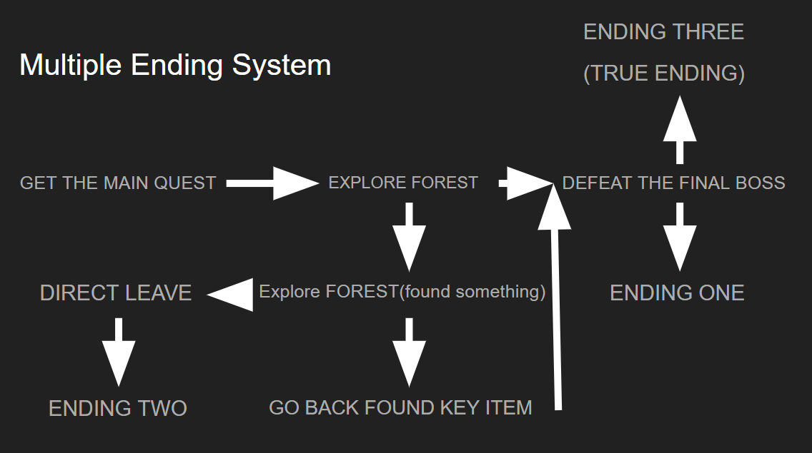
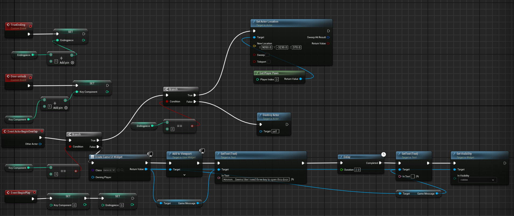

The White Wolf
Project Overview
The White Wolf is a short narrative-driven RPG that explores moral choices and consequences in a medieval fantasy world. Players take on the role of a lone traveler who arrives at an isolated village plagued by attacks from a mysterious white wolf. The game challenges players to make decisions that influence multiple branching outcomes: will they eliminate the threat through combat, attempt to coexist, or discover a hidden path to peaceful resolution?
My Contributions
This project was built independently using a school-provided JRPG template. I was responsible for all aspects of the game design and blueprint scripting, including:
- Designing the village and forest exploration areas
- Scripting multi-path quests with interactive puzzles
- Balancing the turn-based combat system and boss behaviors
My focus was on delivering an engaging player experience where exploration, narrative, and combat choices are closely intertwined to offer multiple endings and replayability.
Multiple Ending System Logic
This screenshot shows the flowchart for the branching narrative. It starts with the player getting the main quest. Depending on whether they fully explore the forest and find a key item, or simply rush to face the final boss, the system directs them to one of three balanced and impactful endings (True Ending, Defeat Ending, or Early Leave Ending).

Fig 1: Multiple Ending System Flowchart.
One of the coolest parts of The White Wolf is its multiple ending system. Players can make different choices that lead to three possible outcomes. I designed this system to reward players who are curious and like to explore everything the game world has to offer.
Quest Progression Blueprint Logic
To control the quest progression and player choices, I created custom Blueprint logic. This screenshot shows the interaction between player actions, quest conditions, and global game state to ensure a clean, stable, and reactive experience.

Fig 2: Custom Blueprint logic for quest and choice management.
For The White Wolf, I also created custom Blueprint logic to control quest progression and player choices. I used Sequence and Branch nodes to manage the flow, and referenced global game state to track player progress across different levels. This setup allowed me to build a multiple ending system that responds to the player's choices in real time.
Full Game Map Design
This screenshot shows the final map layout, divided into two main zones: the village and the forest.

Fig 3: Top-down map overview of the village and forest areas.
I designed the full game map for The White Wolf, dividing it into two main zones: the village and the forest. The village acts as a safe zone, where players can talk to NPCs and prepare for the journey. The village is compact and walled off, creating a sense of protection and community. Outside the village lies the forest, the game's primary exploration and danger zone. I carefully designed the map to guide players naturally from safe to risky areas, balancing storytelling and gameplay flow.